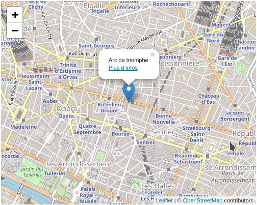

Télécharger le module : Open Street Map
Présentation
Ce module est un module intégrable permettant d'intégrer une carte OpenStreetMap dans votre application.Télécharger
Télécharger l'archive suivante : openStreetMap.zipDésarchivez dans le répertoire module de votre application.
Copiez les fichiers présents dans le répertoire public de l'archive dans le repetoire public de votre application (fichiers css,js)
Utilisation
Dans votre fichier main.php de votre application, au sein de l'action de votre choixPour cela vous devez inclure ce module comme suit, ici à l'emplacement principal "main"
$oModuleOpenStreetMap=new module_openstreetMap();
$oModuleOpenStreetMap->setWidth(500);
$oModuleOpenStreetMap->setHeight(400);
$oModuleOpenStreetMap->setZoom(14);
//un pointer avec un peu de contenu html lorsque l'on clique dessus
$oModuleOpenStreetMap->addPosition('1 boulevard montmartre, 75002 Paris','Arc de triomphe<br/> <a href="#">Plus d infos</a>');
$this->oLayout->add('main',$oModuleOpenStreetMap->getMap());
